Mundo Vivo · revisão visual
Primeiro lote de modelos
Referências no estilo voxel escolhido. As imagens ainda não são sprites animados ou arquivos transparentes prontos para o jogo; servem para aprovar a direção visual antes de produzir os demais elementos.
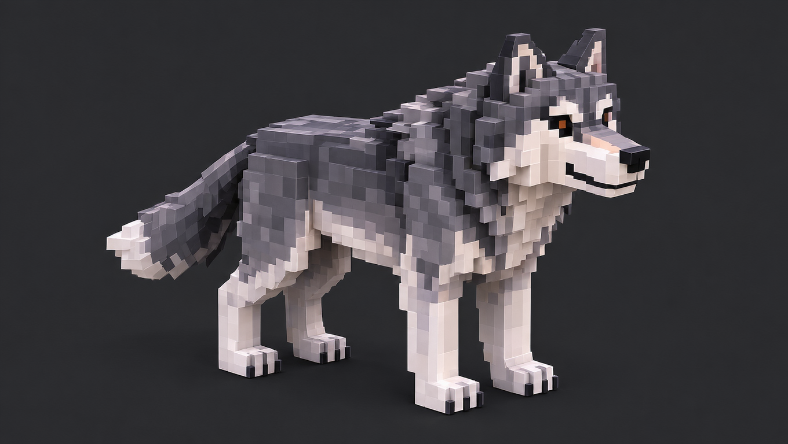
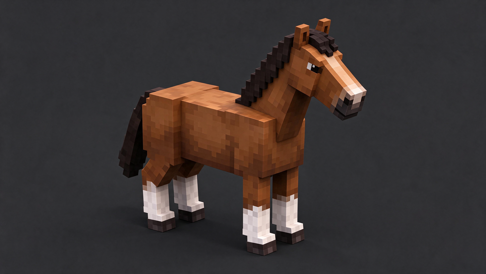
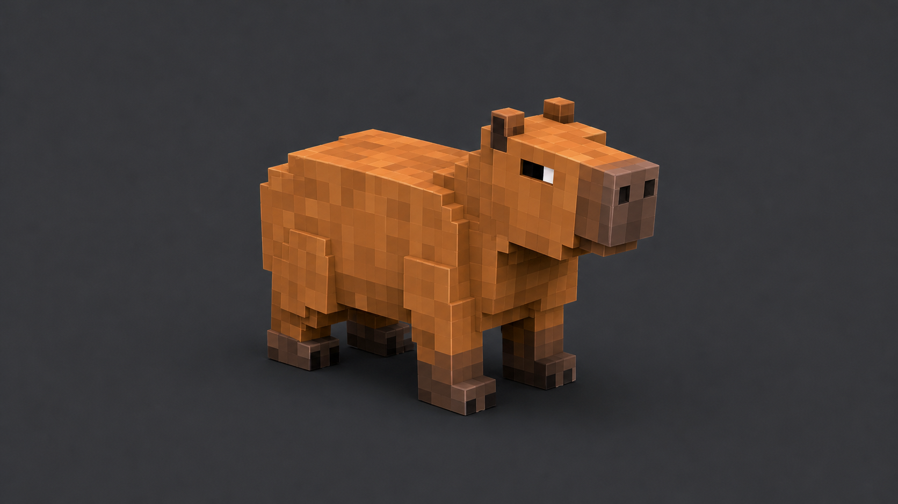
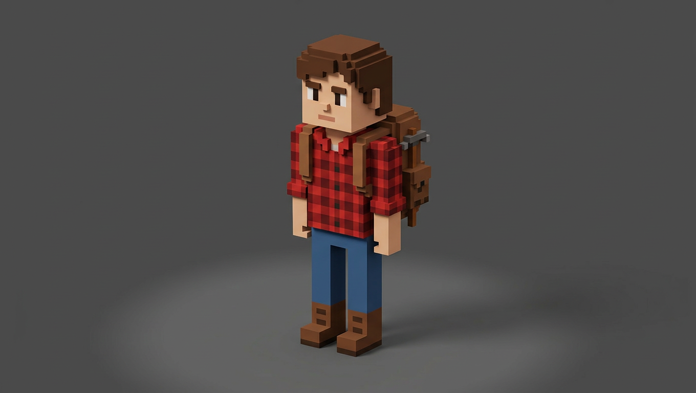
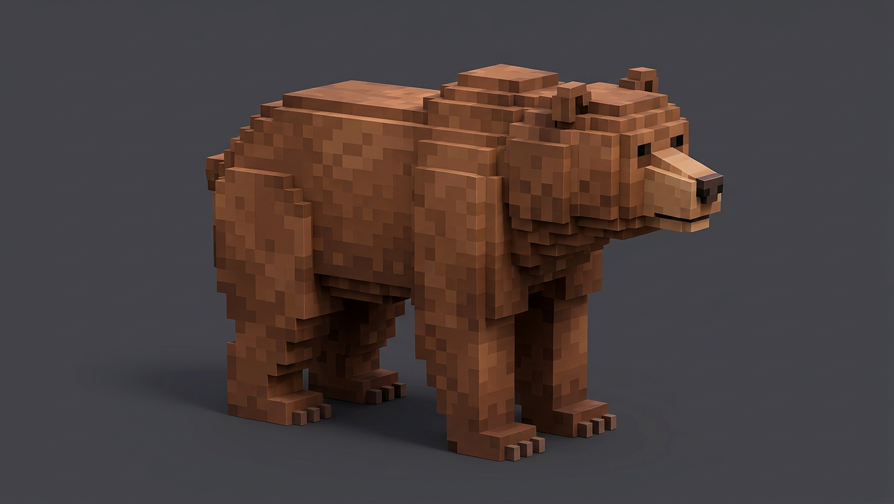
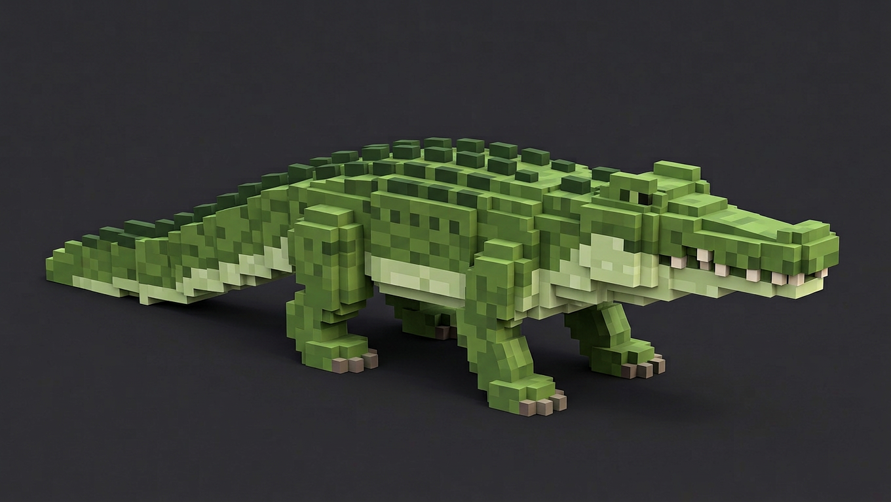
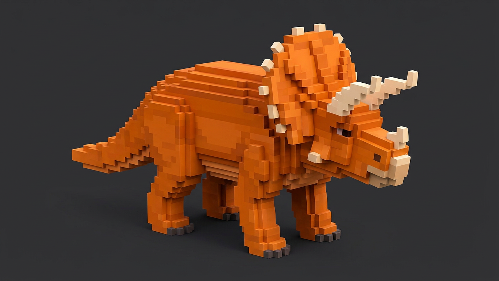
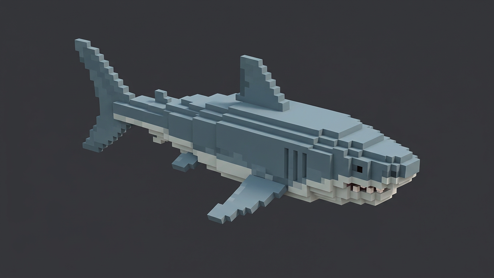
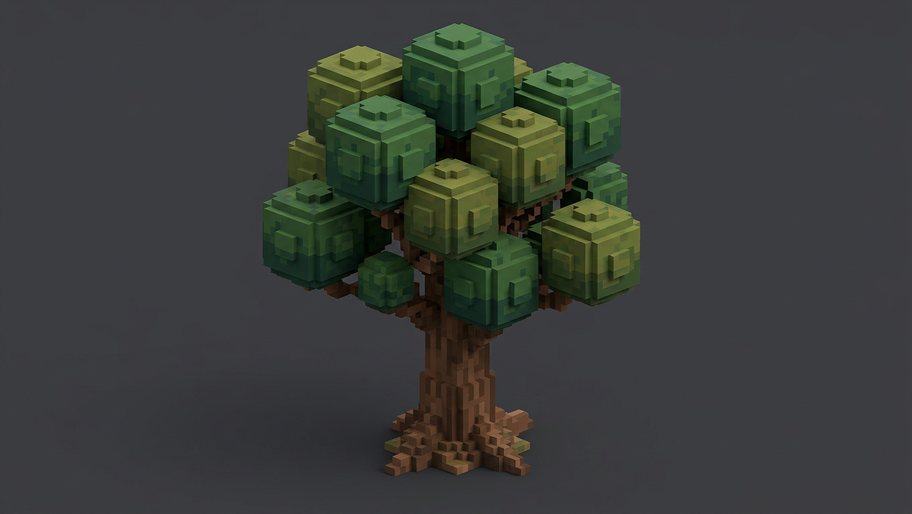
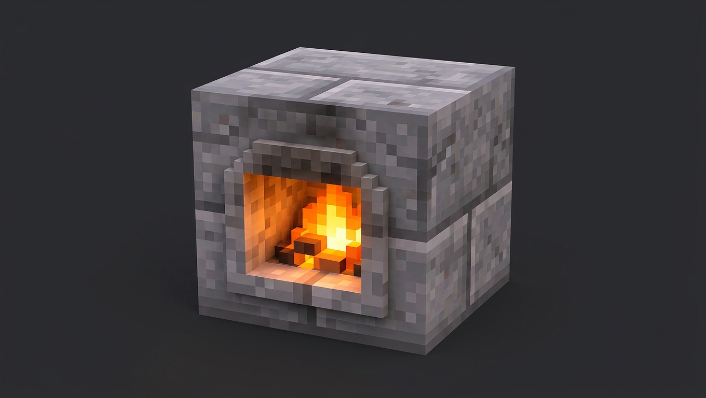
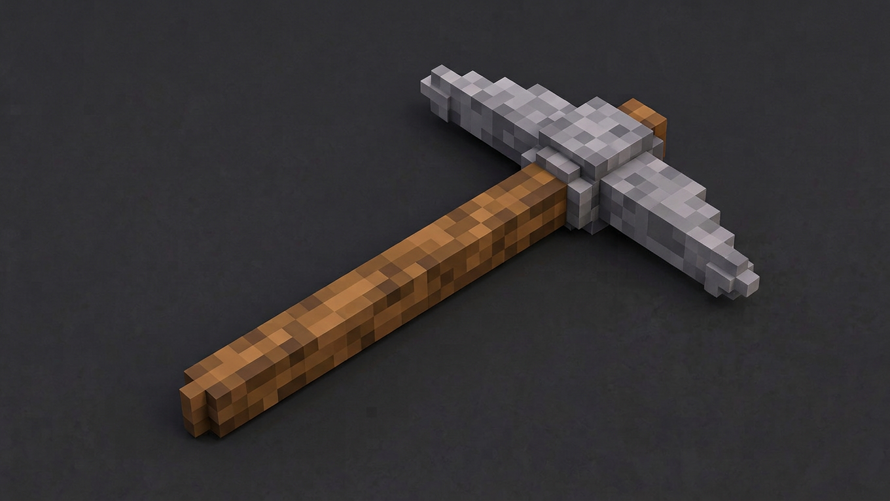
Faltam os demais animais, dinossauros, criaturas marinhas, recursos, construções, ferramentas e elementos dos biomas. Clique em uma imagem para vê-la em tamanho completo.